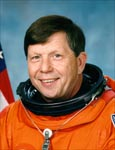

Lyndon B. Johnson Space Center
Houston, Texas 77058
|
National Aeronautics and Space Administration Lyndon B. Johnson Space Center Houston, Texas 77058 |
 |
Biographical Data |
||
Roger K. Crouch (Ph.D.)
Payload Specialist
PERSONAL DATA: Born September 12, 1940, in Jamestown, Tennessee. Currently resides in Washington, DC with his wife the former Anne Novotny. He has three grown children, Melanie, Kevin and Kenyon. His mother, Maxine Crouch, resides in Jamestown, Tennessee. Her mother, Helene Novotny, resides in Marston, Maryland. He enjoys traveling, photography, sports, camping, hiking, fishing and white water rafting.
EDUCATION: Earned a bachelor of science in physics from Tennessee Polytechnic Institute in 1962, masters of science and a doctor of philosophy in physics from Virginia Polytechnic Institute in 1968 and 1971, respectively. He was a visiting scientist at Massachusetts Institute of Technology in 1979-80.
EXPERIENCE: Retired from NASA and MIT, currently consults with various firms and delivers inspirational and informative lectures to a broad range of audience interests. Served as Liaison for Higher Education for the Exploration Systems Directorate, 2005;Senior Scientist for the International Space Station, 2000-2004; Senior Scientist for the Office of Life and Microgravity Sciences, NASA-HQ, 1998-2000; crew training, flight and post-flight activities 1996-1998; Lead Scientist of the Microgravity Space and Applications Division 1985-1996. He served as Program Scientist on five different Spacelab flights. In addition, he helped organize and has served as co-chair for Microgravity Science Working Groups between NASA and space agencies from the European Space Agency, France, Germany, Japan, and Russia. He was the founding co-chair of the International Microgravity Science Strategic Planning group consisting of these space agencies plus Canada. He was principal investigator on an experiment that flew in the Materials Experiment Apparatus on the D-1 mission in 1985. Group leader and researcher, NASA Langley Research Center, 1962-1985. Leader of a research group investigating the effects of convection on semiconductor materials’ properties. He was a principal investigator in the MSAD flight program from 1977-1985. He has done research in various techniques and types of semiconductor crystal growth, electric and optical properties of materials, electronic devices for remote sensing and flat panel displays, and heat shield protection for reentry space vehicles. This research resulted in the publication of over 40 technical paper and over 50 technical conference reports.
SPACE FLIGHT EXPERIENCE: Payload Specialist on STS-83 (April 4-8, 1997) and STS-94 (July 1-17, 1997) and has logged over 471 hours in space. STS-83, the Microgravity Science Laboratory (MSL-1) Spacelab mission, was cut short because of problems with one of the Shuttle’s fuel cell power units. Mission duration was 95 hours and 12 minutes, traveling 1.5 million miles in 63 orbits. STS-94 was a reflight of the MSL-1 and focused on materials and combustion science research. Mission duration was 376 hours and 45 minutes, traveling 6.3 million miles in 251 orbits of the Earth. He trained as the Alternate Payload Specialist on STS-42 (First International Microgravity Laboratory) which flew in January 1992.
SPECIAL HONORS: Distinguished Alumni Achievement, Virginia Tech, 1998; Distinguished Alumnus 1997, Tennessee Technological University; NASA Space Flight Medal (2), 1997; NASA Exceptional Performance Award, 1989; NASA Special Achievement Award, 1983; Certificates for Patents/applications 1975, 85, 86, 87; Certificates for innovative technology 1973, 76, 79, 80, 81, 85, 86, 87; Floyd Thompson Fellowship 1979-80.
ORGANIZATIONS: Member of American Physical Society, American Association for Crystal Growth, Association of Space Explorers, Sigma Pi Sigma, Kappa Mu Epsilon.
NOVEMBER 2005
This is the only version available from NASA. Updates must be sought direct from the above named individual.
{kind=link}